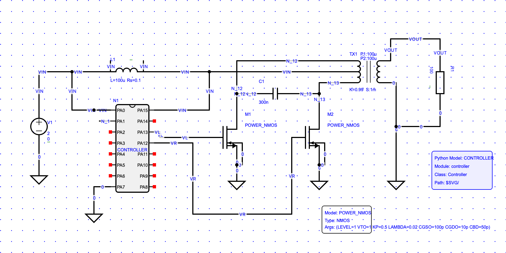
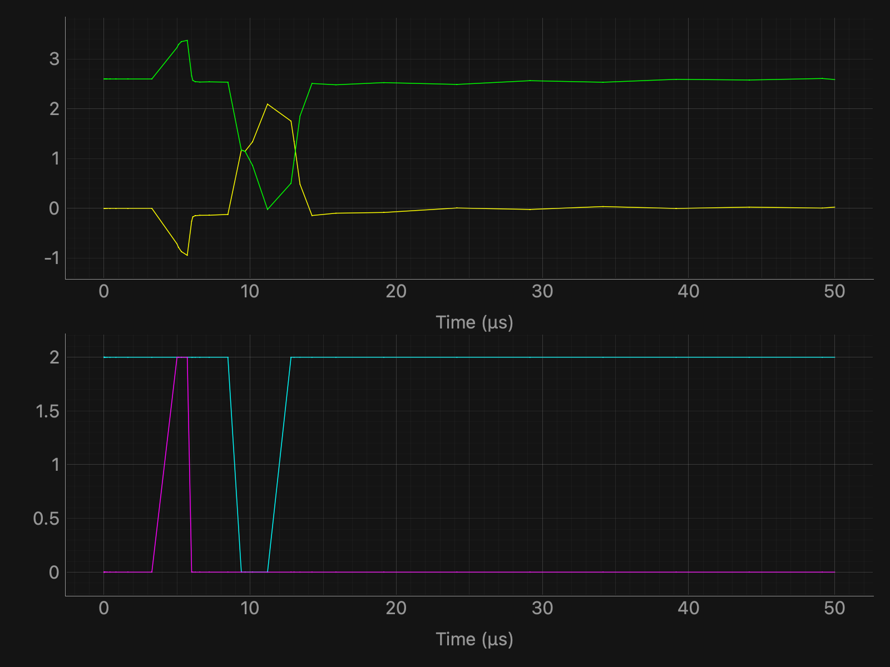

Created by OpenS
Created by OpenS

| Name | Expression | Unit | Min | Value | Max | Description |
|---|
subaxis(2,1)
plot(st('LP11#branch'), label="st('LP11#branch')")
plot(st('LP21#branch'), label="st('LP21#branch')")
subaxis(2,2)
plot(st('VR'), label="st('VR')")
plot(st('VL'), label="st('VL')")

*****
***** Welcome to the Xyce(TM) Parallel Electronic Simulator
*****
***** This is version Xyce Release 7.10-opensource
***** Date: Fri Mar 06 07:47:52 CET 2026
***** Executing netlist /Users/rennekef/Documents/SchematicEntry/backup/tests/grid-tie/grid-tie-lib/inverter/simulation/schematic.net
***** Reading and parsing netlist...
DEBUG checkIfModelValid: device_type=M, modelType=NMOS, modelLevel=1, isModelLevelValid=1, isModelTypeValid=1, numNodes=4
DEBUG checkIfModelValid: device_type=M, modelType=NMOS, modelLevel=1, isModelLevelValid=1, isModelTypeValid=1, numNodes=4
DEBUG checkIfModelValid: device_type=N, modelType=NPY, modelLevel=1, isModelLevelValid=1, isModelTypeValid=1, numNodes=16
***** Setting up topology...
Netlist warning: Voltage Node (N_1) connected to only 1 device Terminal
Netlist warning: Voltage Node (N_2) connected to only 1 device Terminal
Netlist warning: Voltage Node (N_3) connected to only 1 device Terminal
Netlist warning: Voltage Node (N_4) connected to only 1 device Terminal
Netlist warning: Voltage Node (N_5) connected to only 1 device Terminal
Netlist warning: Voltage Node (N_6) connected to only 1 device Terminal
Netlist warning: Voltage Node (N_7) connected to only 1 device Terminal
Netlist warning: Voltage Node (N_8) connected to only 1 device Terminal
Netlist warning: Voltage Node (N_9) connected to only 1 device Terminal
Netlist warning: Voltage Node (N_10) connected to only 1 device Terminal
Netlist warning: Voltage Node (N_11) connected to only 1 device Terminal
Netlist warning: Voltage Node (N_2) does not have a DC path to ground
Netlist warning: Voltage Node (N_3) does not have a DC path to ground
Netlist warning: Voltage Node (N_4) does not have a DC path to ground
Netlist warning: Voltage Node (N_5) does not have a DC path to ground
Netlist warning: Voltage Node (N_6) does not have a DC path to ground
Netlist warning: Voltage Node (VL) does not have a DC path to ground
Netlist warning: Voltage Node (N_7) does not have a DC path to ground
Netlist warning: Voltage Node (N_8) does not have a DC path to ground
Netlist warning: Voltage Node (N_9) does not have a DC path to ground
Netlist warning: Voltage Node (VR) does not have a DC path to ground
Netlist warning: Voltage Node (N_10) does not have a DC path to ground
Netlist warning: Voltage Node (N_11) does not have a DC path to ground
***** Device Count Summary ...
C level 1 (Capacitor) 1
K level 1 (Linear Mutual Inductor) 1
L level 1 (Inductor) 1
M level 1 (MOSFET level 1) 2
NPY level 1 (Python Device) (Python Device) 1
R level 1 (Resistor) 2
V level 1 (Independent Voltage Source) 1
---------------------------------------------
Total Devices 9
***** Setting up matrix structure...
***** Number of Unknowns = 23
***** Initializing...
***** Beginning DC Operating Point Calculation...
***** Beginning Transient Calculation...
***** Percent complete: 1.6382 %
***** Current system time: Fri Mar 6 07:47:53 2026
***** Estimated time to completion: 0 sec.
***** Percent complete: 3.2766 %
***** Current system time: Fri Mar 6 07:47:53 2026
***** Estimated time to completion: 0 sec.
***** Percent complete: 6.5534 %
***** Current system time: Fri Mar 6 07:47:53 2026
***** Estimated time to completion: 0 sec.
***** Percent complete: 10 %
***** Current system time: Fri Mar 6 07:47:53 2026
***** Estimated time to completion: 0 sec.
***** Percent complete: 11.4 %
***** Current system time: Fri Mar 6 07:47:53 2026
***** Estimated time to completion: 0 sec.
***** Percent complete: 12.48 %
***** Current system time: Fri Mar 6 07:47:53 2026
***** Estimated time to completion: 0 sec.
***** Percent complete: 14.4 %
***** Current system time: Fri Mar 6 07:47:53 2026
***** Estimated time to completion: 0 sec.
***** Percent complete: 16.96 %
***** Current system time: Fri Mar 6 07:47:53 2026
***** Estimated time to completion: 0 sec.
***** Percent complete: 18.8 %
***** Current system time: Fri Mar 6 07:47:53 2026
***** Estimated time to completion: 0 sec.
***** Percent complete: 20.336 %
***** Current system time: Fri Mar 6 07:47:53 2026
***** Estimated time to completion: 0 sec.
***** Percent complete: 22.384 %
***** Current system time: Fri Mar 6 07:47:53 2026
***** Estimated time to completion: 0 sec.
***** Percent complete: 25.6 %
***** Current system time: Fri Mar 6 07:47:53 2026
***** Estimated time to completion: 0 sec.
***** Percent complete: 26.8288 %
***** Current system time: Fri Mar 6 07:47:53 2026
***** Estimated time to completion: 0 sec.
***** Percent complete: 28.4672 %
***** Current system time: Fri Mar 6 07:47:53 2026
***** Estimated time to completion: 0 sec.
***** Percent complete: 31.744 %
***** Current system time: Fri Mar 6 07:47:53 2026
***** Estimated time to completion: 0 sec.
***** Percent complete: 38.2976 %
***** Current system time: Fri Mar 6 07:47:53 2026
***** Estimated time to completion: 0 sec.
***** Percent complete: 48.2976 %
***** Current system time: Fri Mar 6 07:47:53 2026
***** Estimated time to completion: 0 sec.
***** Percent complete: 58.2976 %
***** Current system time: Fri Mar 6 07:47:53 2026
***** Estimated time to completion: 0 sec.
***** Percent complete: 68.2976 %
***** Current system time: Fri Mar 6 07:47:53 2026
***** Estimated time to completion: 0 sec.
***** Percent complete: 78.2976 %
***** Current system time: Fri Mar 6 07:47:53 2026
***** Estimated time to completion: 0 sec.
***** Percent complete: 88.2976 %
***** Current system time: Fri Mar 6 07:47:53 2026
***** Estimated time to completion: 0 sec.
***** Percent complete: 98.2976 %
***** Current system time: Fri Mar 6 07:47:53 2026
***** Estimated time to completion: 0 sec.
***** Problem read in and set up time: 0.15129 seconds
***** DCOP time: 0.0109611 seconds. Breakdown follows:
Number Successful Steps Taken: 1
Number Failed Steps Attempted: 0
Number Jacobians Evaluated: 3
Number Linear Solves: 3
Number Failed Linear Solves: 0
Number Residual Evaluations: 5
Number Nonlinear Convergence Failures: 0
Total Residual Load Time: 0.000126839 seconds
Total Jacobian Load Time: 0.000134945 seconds
Total Linear Solution Time: 0.00178218 seconds
***** Transient Stepping time: 0.00662017 seconds. Breakdown follows:
Number Successful Steps Taken: 42
Number Failed Steps Attempted: 0
Number Jacobians Evaluated: 116
Number Linear Solves: 116
Number Failed Linear Solves: 0
Number Residual Evaluations: 158
Number Nonlinear Convergence Failures: 0
Total Residual Load Time: 0.000756741 seconds
Total Jacobian Load Time: 0.000414371 seconds
Total Linear Solution Time: 0.00157523 seconds
***** Solution Summary *****
Number Successful Steps Taken: 43
Number Failed Steps Attempted: 0
Number Jacobians Evaluated: 119
Number Linear Solves: 119
Number Failed Linear Solves: 0
Number Residual Evaluations: 163
Number Nonlinear Convergence Failures: 0
Total Residual Load Time: 0.000883579 seconds
Total Jacobian Load Time: 0.000549316 seconds
Total Linear Solution Time: 0.00335741 seconds
***** Total Simulation Solvers Run Time: 0.017803 seconds
***** Total Elapsed Run Time: 0.169077 seconds
*****
***** End of Xyce(TM) Simulation
*****
Timing summary of 1 processor
Stats Count CPU Time Wall Time
---------------------------------------- ----- --------------------- ---------------------
Xyce 1 0.062 (100.0%) 0.196 (100.0%)
Analysis 1 0.007 (11.55%) 0.018 ( 9.05%)
Transient 1 0.007 (11.52%) 0.018 ( 9.04%)
Nonlinear Solve 43 0.005 ( 8.41%) 0.014 ( 7.15%)
Residual 163 0.001 ( 1.57%) 0.001 ( 0.57%)
Jacobian 119 0.001 ( 0.84%) 0.001 ( 0.35%)
Linear Solve 119 0.002 ( 2.93%) 0.004 ( 1.79%)
Successful DCOP Steps 1 0.000 ( 0.66%) 0.001 ( 0.62%)
Successful Step 42 0.001 ( 1.16%) 0.001 ( 0.57%)
Netlist Import 1 0.047 (74.94%) 0.118 (59.90%)
Parse Context 1 0.001 ( 1.25%) 0.005 ( 2.34%)
Distribute Devices 1 0.002 ( 3.89%) 0.005 ( 2.31%)
Verify Devices 1 0.000 ( 0.02%) 0.000 ( 0.08%)
Instantiate 1 0.042 (66.98%) 0.079 (40.46%)
Late Initialization 1 0.002 ( 3.13%) 0.013 ( 6.65%)
Global Indices 1 0.000 ( 0.54%) 0.001 ( 0.54%)
Setup Matrix Structure 1 0.000 ( 0.56%) 0.005 ( 2.69%)